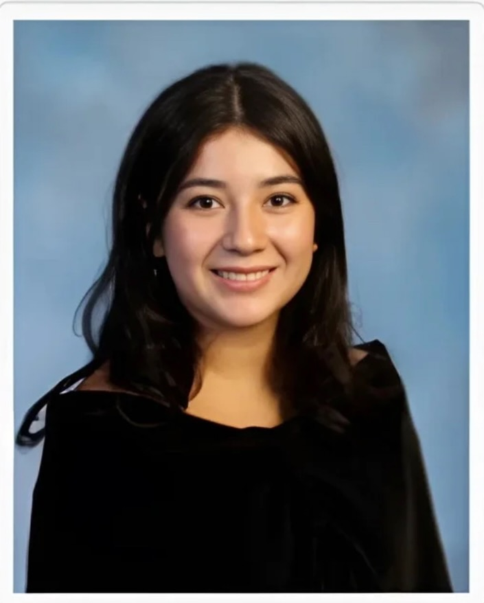

Leadership and Management student at Rutgers Business School hoping to work in Human Resources to help people and organizations thrive.
Organized community events, food drives, and toy collections that raised over $10,000 and directly supported over 100 families in need.
Designed and led instructional programs for students aged 6 to 50, running shift team meetings to foster skill-building and water safety confidence.
Managed inventory organization, sorting, and distribution operations at a local food pantry to deliver essential supplies to community members.
Management Skills, Statistics, Principles of Macroeconomics, Principles of Microeconomics, Computer Applications, Intro to Management, and Intro to Financial Accounting.
Help organize and distribute items at a local food pantry.